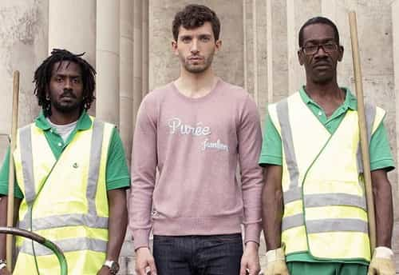

André is a young European who left his decaying country in 2012 for greener pastures. He enjoys exploring subterranean places, reading about a host of interconnected topics, and yearns for Tradition.


“Bobo” is the contraction of “Bourgeois Bohemian,” an expression that surfaced in the late 1990s. According to David Brooks, self-claimed Bobo and author of the first book on the topic, the Bobo is a mix of 1960s “Bohemian” Leftist spirit and of 1980s “Bourgeois” yuppie attitude. Typically, a Bobo lives in a metropolitan city, thinks of himself as an artist or an intellectual, earns more money than the average Joe, and leans to that weft which caters to “minorities” but spits on the white working class and the “white male.”
Though the word “Bobo” seemingly appeared in the United States, it is barely used there. ROK writers who unmasked feminist slanderers and threat-makers that typically fall in the Bobo social class did not use the word. The hipsters, the wealthy, the urban elves, the global elite are commonly referred to, but the Bobo is not. In France, the expression fared much better, to the point of being widely used. I used it in my first article here and thought that, without it, the article would have been incomplete.
A member of a new and privileged social class, a Bobo thrives on the so-called information age and usually makes enough money to live near the center of a city rather than in suburbs or in the countryside. A Bobo is typically smug, has a higher IQ than most people, and is only too aware of it. He openly despises the beaufs—the Homer Simpsons, the Archie Bunkers. He identifies with the current mainstream culture and often shares its financial interests.
The Bobo’s worldview and class interest make him an enforcer of double standards. He has no problem with women committing sexual assaults and a variety of reprehensible acts, just as he is okay with immigrants swarming over Europe and committing violent crimes, because in his views they are “minorities,” but shows contempt and even hatred for the suffering white working class whose dispossession was so complete it led thousands of men to suicide. Likewise, the Bobo loves to denounce those who were left to the mercy of the public anger through the “Panama papers” scandal, but conveniently forgets who paid for manufacturing said scandal and who pays him as well.
Considering that the Western world opposes two social classes, namely the typical urban elves on the one side and the dispossessed, downgraded majority, whose members often come from the middle and working classes, it is worthwhile asking where we, the neomasculine and red-pilled, fit in.
If you are not a prole or beauf and do not identify with the Jersey Shore culture, are you sure you are not a Bobo either? Here are some cues that will help you determining your own level of boboism.
If you work as a journalist, a marketer, an advertiser, a webmaster, a freelance writer or graphic designer, or a novelist, you are performing an activity that is mostly practiced by Bobos. These jobs mix the artsy with the business, the “Bohemian” with the hunt for bucks.
Today, corporations cater to SJWs. If you manage to work there, chances are you are not an old-fashioned alpha boss who gets the shit done. If you work in finance, you must also go to trendy bars with your colleagues for the sole reason of assuring your social status inside the company. Though this is not as essentially Bobo as being a millionaire advertiser, this puts you straight within the system and on a financial par with the Bobos.
Downtowns are hotbeds of hipsterism and boboism. The Bobo class tends to appropriate city centers by buying flats there and opening bars and shops that reflect them. If you can afford living there and are used to the atmosphere, it may be hard to distinguish you from a usual Bobo at first glance.
And when you travel to a country that still does not have any, you miss them.
Self-explanatory.
Eating organic means buying expensive food that has an “organic” label on it. If you follow a Paleo diet and legitimately blame the vegetarians’ annoying holier-than-thou attitude, eating lots of meat is expensive too, and caring a lot about your food is typically Bobo. Bonus points if you eat goji berries on a regular basis.
A world of art exhibitions featuring abstract paintings and pompous comments over glasses of champagne.
And you believe that ancient history is made of “myths,” that everything can be boiled down to “human” and physical causes, that Christopher Hitchens or Richard Dawkins deserve public recognition.
Comic parodies, indie rock bands, Jeff Koons, Damien Hirst, Banksy, Gossip Girl, Moleskin notebooks. For detailed lists, check the infamous Stuff White People Like blog and its Parisian counterpart, De l’art d’être un bobo.
When you see every event, news item or conversation theme as an opportunity to display a “witty” opinion, this means you are both an asshole and an accomplished Bobo. Congratulations.
And enjoy showing them off on Facebook. Bonus point if you claim to be a photographer.
Which implies that you consider yourself talented enough to use professional-rate material and can afford it.
“Okay, it’s expensive and commonly overrated, but I like these and it is my choice.” Or: “I am a graphic designer, I also edit high definition videos, hence I need it.”
Even those whom you should support if you want Trump to beat the establishment.
Bobos find it vulgar to spend a lot on a Jacuzzi, but are okay with showing off on household equipment.
Voodoo knife-rack, exotic hangings, green wallpaper behind a red sofa, cushions with ten different colors or patterns…

Because you have good taste and are well-traveled.

A significant part of your t-shirts display puns, catchphrases, and private jokes that need either a decent level of culture—by who’s standards?—or being part of a specific milieu to be understood. Bonus points if you own The Kooples clothes.
You know most of the microbrewery bars, organic shops, art galleries downtown. You go to hipster bars to game girls and spend the day after studying at Starbucks, but find most hipsters ridiculous and tryhard.
The first time you could go far away to game girls, you chose New York, Vancouver, San Francisco, Paris, Berlin… and went downtown.
Bicycles are a very convenient vehicle as long as you go from one neighbourhood to another (that is, do not work or study far from home).
And no, gardening on the top of a building in New York does not make you an accomplished gardener.

A prole is glad that he can buy a $20 polar sweatshirt that will keep him warm during winter. A Bobo despises this kind of clothing and prefers a $300 polar sweatshirt because it’s “classy.”

A friend of mine once said that he shared a class with young Bobo girls. When he told said girls that his parents were fabric workers, some opened wide eyes and said, “Wow, how lucky!” These girls would like the chic of having “roots” in modest milieus but want comfort, fashion, and no contact with the proles.
Hence the “witty” comments on Hollywood movies, geek nostalgia, and related topics.
And though you did not talk to them, you recognize them when they are present.
I’ve seen a non-negligible amount of scrawny hipsters having a fetish for the various deviants, especially the violent ones, who get honored by Vice magazine daily. A surrogate source of violence for those who never traded blows in real life.
…but you never used them in wilderness, or only a couple of times.
When Salafi terrorists assassinated a bunch of Bobo press drawers in Paris on January 7, 2015, you sported a nice Je suis Charlie as your Facebook profile picture. And, later that year, you asked gleefully to your Parisian friend—because you are well-traveled enough to know at least one person in Paris—if he could hear the explosions and screams. Now, of course, you despise the Charlie crowd as mainstream and blue-pilled, but prefer living near them than in a ghetto.

Speaking of ghettos, you would never live there, but still blame other whites for being “racists.” You have few or no experience of said ghettos, never had to take late night trains where whites are but a minority, never had to compose with gangs of teenage thugs, never had to support space obfuscation, night noise, smell, or threats. Only someone who always managed to avoid that—which is, perhaps fortunately, more difficult today than only ten years ago—can blame “white racism” in good faith.
This is exactly how I felt while reading Brooks’ book. Initially, I saw the Bobos as an enemy, felt alienated from their culture, and wanted to know more about them for that reason. Yet, going through the book, I realized I had some Bobo-like features myself. Well, the Bobo world tends to attract us because it has money and stimulating employments. And, also, because most of us red-pilled are honestly more intelligent and with better tastes than, in Roissy’s words, “lower classes [that] are crass, boorish and often thoughtlessly impulsive.”
“Being in the world without being from the world”: this is how Guillaume Faye, a notorious European New Right intellectual, justified his career as a radio host and porn actor between two books that criticized the system…
Many of us are trapped in that strange condition. We work with, or for, the leftist establishment because we need money and want some social status. We are these “brogrammers” who practice game in places that belong to Bobos. Is there any hope to change society—make neomasculinity triumph—or are we somehow necessitated to end up swallowed by either the Bobo or the prole herds? The answer may not be easy to find.
 If you like this article and are concerned about the future of the Western world, check out Roosh's book Free Speech Isn't Free. It gives an inside look to how the globalist establishment is attempting to marginalize masculine men with a leftist agenda that promotes censorship, feminism, and sterility. It also shares key knowledge and tools that you can use to defend yourself against social justice attacks. Click here to learn more about the book. Your support will help maintain our operation.
If you like this article and are concerned about the future of the Western world, check out Roosh's book Free Speech Isn't Free. It gives an inside look to how the globalist establishment is attempting to marginalize masculine men with a leftist agenda that promotes censorship, feminism, and sterility. It also shares key knowledge and tools that you can use to defend yourself against social justice attacks. Click here to learn more about the book. Your support will help maintain our operation.
Read Next: The Most Amazing Takedown Of Hipsters I’ve Ever Read